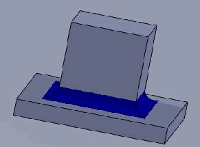
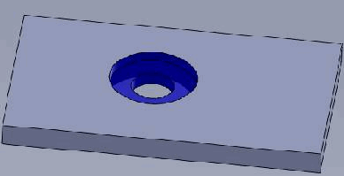

.NET Syntax
.NET Syntax
| Visual Basic (Declaration) | |
|---|---|
Function DeleteFaces5( _ ByVal FaceList As System.Object, _ ByVal HealAction As System.Integer, _ ByVal LoopProcessOption As System.Integer, _ ByVal DoLocalCheck As System.Boolean, _ ByRef BodyList As System.Object, _ ByRef LocalCheckResult As System.Boolean _ ) As System.Boolean | |
| Visual Basic (Usage) |  Copy Code Copy Code |
|---|---|
Dim instance As IBody2 Dim FaceList As System.Object Dim HealAction As System.Integer Dim LoopProcessOption As System.Integer Dim DoLocalCheck As System.Boolean Dim BodyList As System.Object Dim LocalCheckResult As System.Boolean Dim value As System.Boolean value = instance.DeleteFaces5(FaceList, HealAction, LoopProcessOption, DoLocalCheck, BodyList, LocalCheckResult) | |
| C# | |
|---|---|
System.bool DeleteFaces5( System.object FaceList, System.int HealAction, System.int LoopProcessOption, System.bool DoLocalCheck, out System.object BodyList, out System.bool LocalCheckResult ) | |
| C++/CLI | |
|---|---|
System.bool DeleteFaces5( & System.Object^ FaceList, & System.int HealAction, & System.int LoopProcessOption, & System.bool DoLocalCheck, & [Out] System.Object^ BodyList, & [Out] System.bool LocalCheckResult ) | |
Parameters
- FaceList
- Array containing the faces for deletion
- HealAction
- Healing action as defined in swHealActionType_e (see Remarks)
- LoopProcessOption
- Loop processing as defined in swLoopProcessOption_e (see Remarks)
- DoLocalCheck
True checks the bodies during the operation and sets the return value to indicate whether the resultant body is valid, false does not
- BodyList
- Array of temporary bodies
- LocalCheckResult
- True if body is valid, false if not; to obtain this value, you must pass true for the DoLocalCheck argument
Return Value
True if set of faces are deleted, false if notVisual Basic for Applications (VBA) Syntax
Example
Create New Part from Existing Part Using Temporary Body (VBA)
Create New Part from Existing Part Using Temporary Body (C#)
Remarks
When faces are deleted, wounds are created on those faces that require healing. Healing can be accomplished by extending neighboring faces, shrinking the deleted faces, or covering the wounds. The value that you specify for HealAction determines how wounds are healed.
When a wound has multiple loops, you can tell SOLIDWORKS how to process the loops individually or together, or you can let SOLIDWORKS decide how to process the loops. The value you specify for LoopProcessAction determines how to process multiple loops.
For example, consider a cube with a through hole made up of four faces (a square hole). To delete these four faces, specify swHealAction_Shrink for HealAction and swLoopProcess_Together for LoopProcessAction because the loop on the first face to be deleted is dependent on the loop of the second face to be deleted. Likewise, the loop on the second face to be deleted is dependent on the third face to be deleted, and so on.
Now consider the same cube with a through hole, except this through hole is a simple cylinder (one face). To delete the cylindrical face, specify swHealActionShrink_e for HealAction and swLoopProcess_Independent for LoopProcessAction to heal the loops independently. This is necessary because the cylindrical face actually has two loops (one at either end of the cylinder) that need to be healed separately.
It is possible to generate invalid geometry when you use this method because checking is disabled. Call IBody2::Check3 to verify that the body is a valid solid after using this method.
|
swLoopProcess_Together |
swLoopProcess_Independent |
|  |  |
See Also
IBody2 Members
IBody2::DeleteBlends3 Method
IBody2::IDeleteBlends3 Method
IBody2::EnumFaces Method
IBody2::GetFaceCount Method
IBody2::GetFirstFace Method
IBody2::IGetFaces Method
IBody2::IGetFirstFace Method